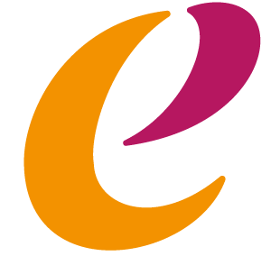
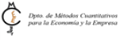

Identificar los sesgos del TWFE
Comprender los problemas de identificación del estimador clásico ante heterogeneidad de efectos y adopción escalonada, mediante la descomposición de Goodman-Bacon.
IV Jornadas Metodológicas y Multidisciplinares · Métodos Cuantitativos
Del estimador clásico TWFE y sus sesgos a la nueva generación de estimadores robustos que están redefiniendo la evaluación causal de impacto con datos de panel.
Universidad de Granada · Facultad de Ciencias Económicas y Empresariales
Sobre la jornada
Las Jornadas Metodológicas y Multidisciplinares en Métodos Cuantitativos son un espacio de actualización y diálogo del profesorado, el personal investigador y el alumnado de doctorado de la Facultad de Ciencias Económicas y Empresariales de la UGR y de centros afines. Cada edición aborda en profundidad una técnica cuantitativa de frontera.
Esta IV edición se dedica a los enfoques modernos de Difference-in-Differences (DiD), el principal instrumento para evaluar políticas públicas e intervenciones empresariales con datos de panel. Desde 2018, la literatura ha demostrado que el estimador clásico de efectos fijos en doble dirección (TWFE) puede producir estimaciones sesgadas cuando los efectos del tratamiento son heterogéneos o la adopción es escalonada, y ha dado lugar a una nueva generación de estimadores robustos que hoy redefine el estándar de la investigación empírica de impacto.
Referencias que vertebran el programa
Objetivos
Una sesión intensiva orientada a que investigadores y doctorandos puedan aplicar con criterio los métodos DiD de última generación.
Comprender los problemas de identificación del estimador clásico ante heterogeneidad de efectos y adopción escalonada, mediante la descomposición de Goodman-Bacon.
Presentar con rigor los estimadores Callaway-Sant'Anna y Sun-Abraham: identificación, propiedades estadísticas e implementación práctica con software estándar.
Introducir el enfoque GFE de Bonhomme-Manresa como vía complementaria para modelizar la heterogeneidad inobservada entre unidades.
Crear un punto de encuentro entre el PDI y el alumnado de doctorado de la FCCEE y de otros centros de la UGR con tradición de investigación empírica.
Contribuir a la actualización del profesorado y personal investigador en métodos cuantitativos avanzados, en coherencia con la misión investigadora de la Facultad.
Ponente invitada
Investigadora con una trayectoria internacional consolidada en economía aplicada, economía del mercado de trabajo, economía de la familia y evaluación de políticas públicas. Ha publicado en revistas de referencia como el Journal of Public Economics, el Journal of the European Economic Association o el Economic Journal, y participa habitualmente en las redes internacionales CEPR e IZA.
Programa del día
La sesión se organiza en dos grandes bloques —primero el diagnóstico, después las soluciones— separados por una pausa de café para el intercambio informal.
Por qué el estimador de efectos fijos en doble dirección —usado como estándar en miles de publicaciones— puede estar sesgado, y cómo detectarlo antes de sacar conclusiones causales.
El conjunto de estimadores modernos que corrige los problemas del TWFE, con criterios prácticos para elegir el más adecuado en cada diseño de investigación.
Horario orientativo (sesión única de 4 h). El programa detallado de la memoria se ha reorganizado en dos bloques con una única pausa de café situada en el ecuador de la mañana.
Asistencia
Actividad abierta, dirigida prioritariamente a la comunidad investigadora de la UGR:
Actividad complementaria. El 11 de noviembre, la Dra. Farré impartirá además un seminario de investigación organizado por el Departamento de Teoría e Historia Económicas.
Inscripción
El acceso es gratuito y abierto. La inscripción solo es necesaria para gestionar el aforo del aula. Las plazas son limitadas.
El formulario de inscripción se publicará próximamente.
Organización
Con el respaldo institucional de

